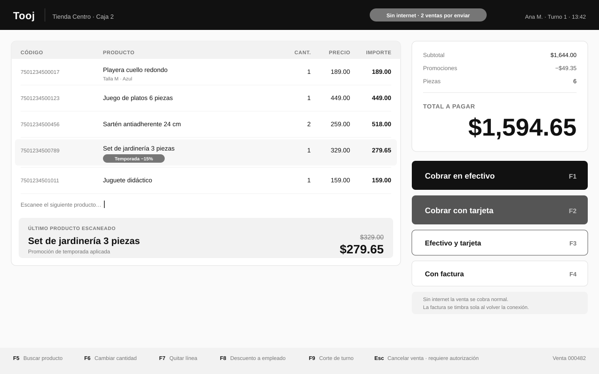
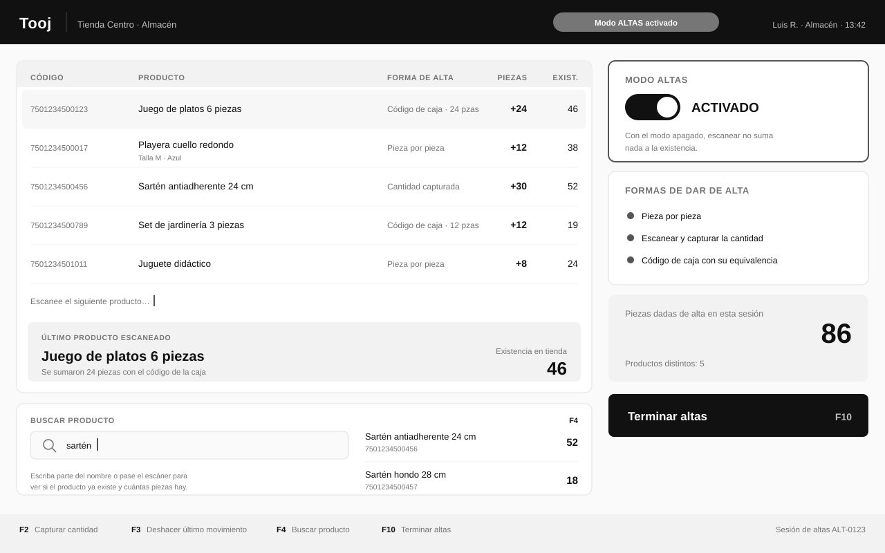
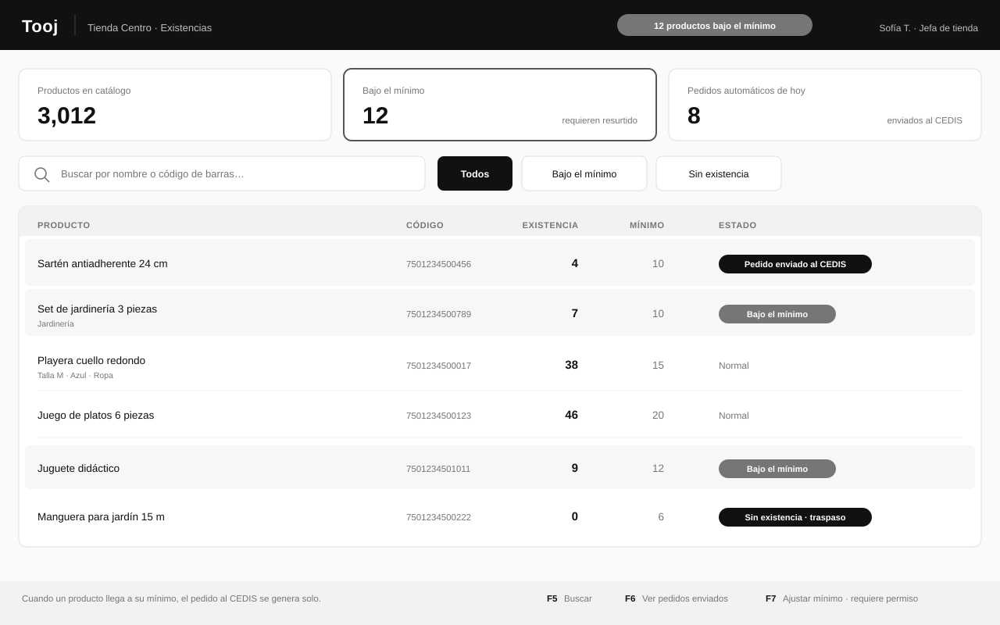
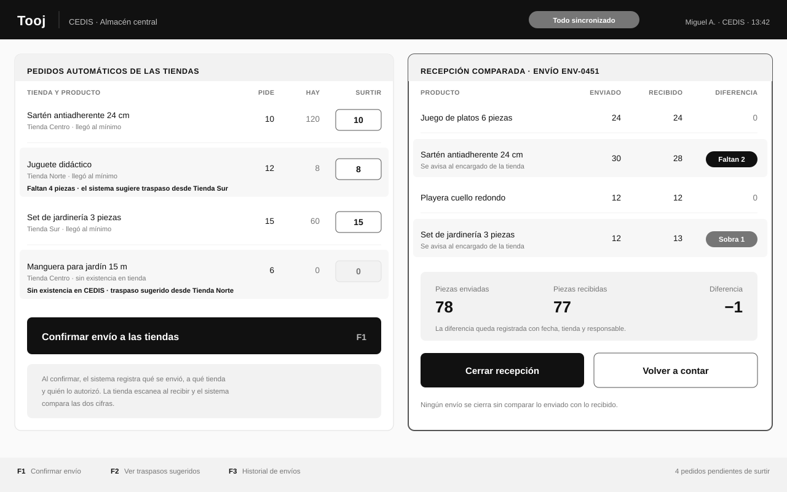
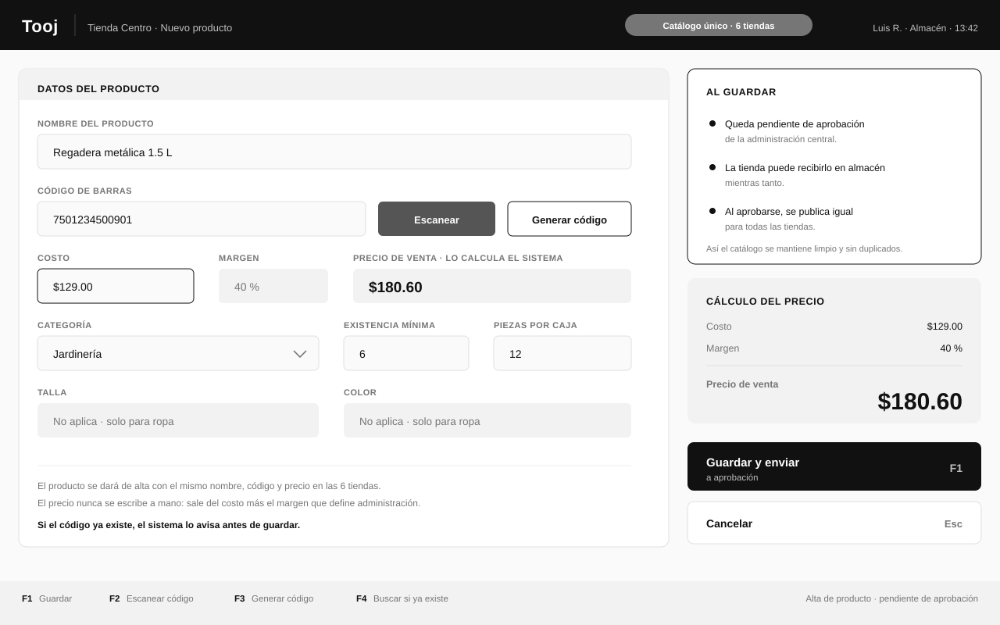
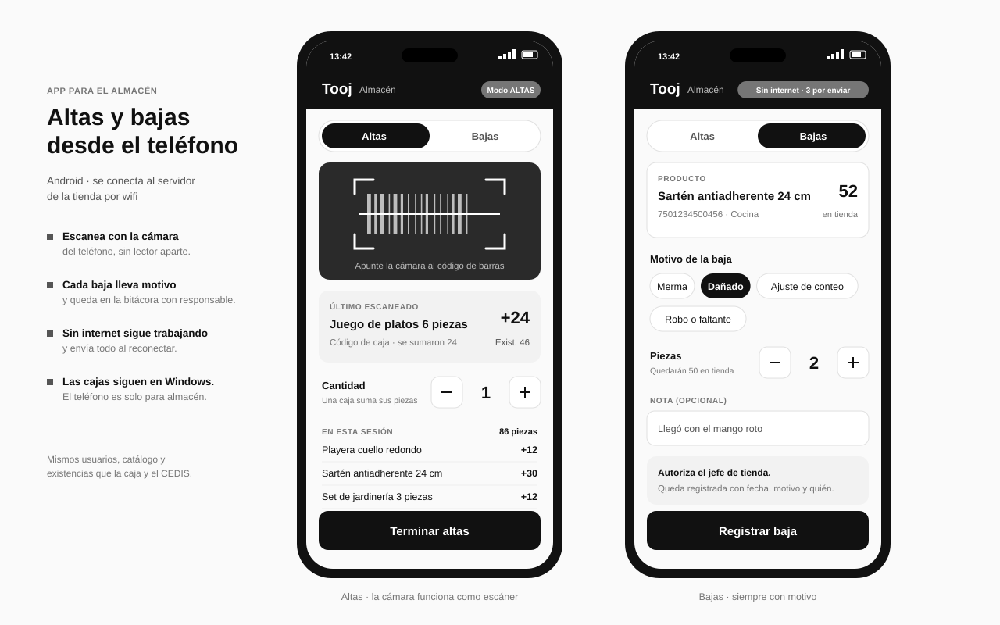
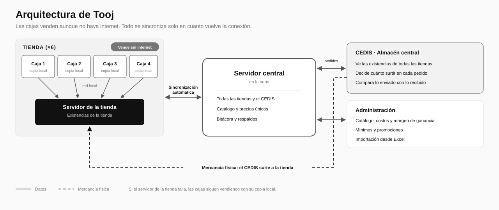

Tooj
Todo cuadra.
Punto de venta e inventario para cadenas de tiendas.
El problema
En una cadena de tiendas, la información de las ventas y del almacén pasa por varios sistemas antes de llegar al almacén central. En cada salto se pierde información y las existencias dejan de cuadrar: a veces sobra mercancía, a veces falta, y nadie sabe en qué punto se perdió.
Eso se paga todos los días: pedidos de resurtido equivocados, tiendas sin producto para vender y conteos manuales que cuestan horas.
La solución
Tooj cubre todo el circuito con un solo sistema:
Alta → Venta → Baja → Pedido → Envío → Recepción
Cada movimiento queda registrado en el mismo lugar, así que las cifras no dependen de que un sistema le pase datos a otro.
Caja
Pensada para escáner y teclado: las acciones frecuentes tienen tecla directa y el total se lee de lejos.
- Venta con escáner de código de barras
- Cobro en efectivo, con tarjeta o combinando ambos
- Ticket automático al aprobarse el pago
- Promociones y descuento a empleados
- Cancelaciones y devoluciones con autorización
- Corte por turno con fondo inicial

Almacén de tienda
El modo Altas se activa con un botón: solo entonces los escaneos suman existencia. Con el modo apagado, pasar el escáner no cambia nada.
- Alta pieza por pieza
- Escanear y capturar la cantidad
- Código de la caja completa, con su equivalencia en piezas
- Buscador para comprobar si un producto ya existe y cuántas piezas hay

Existencias y mínimos
Cada producto tiene una existencia mínima. Cuando la tienda llega a ese número, el pedido al almacén central se genera solo, sin que nadie tenga que acordarse.

Almacén central
Los pedidos llegan solos desde las tiendas. Al enviar, el sistema registra qué salió y hacia dónde; al recibir, la tienda escanea y el sistema compara las dos cifras.

Catálogo y precios
El catálogo es único para todas las tiendas: mismo nombre, mismo código y mismo precio. La tienda puede capturar un producto nuevo, que queda pendiente de aprobación de la administración.
- Solo se escribe el costo: el precio de venta lo calcula el sistema con el margen
- El código se escanea o lo genera el sistema, con impresión de etiquetas
- Si el código ya existe, el sistema avisa antes de guardar
- Importación de catálogos desde Excel

Almacén en el teléfono
El personal de almacén da de alta y de baja la mercancía con un teléfono Android. La cámara funciona como escáner y el teléfono usa los mismos usuarios, catálogo y existencias que la caja.
- Altas pieza por pieza, con cantidad o con el código de la caja
- Cada baja lleva su motivo y queda registrada con fecha y responsable
- Sin internet sigue trabajando y envía todo al reconectar
- Las cajas siguen en Windows: el teléfono es solo para el almacén

Arquitectura

| Pieza | Qué hace |
|---|---|
| Cajas | Aplicación de escritorio para Windows. Cada caja guarda su propia copia de la información. |
| Servidor de tienda | Concentra las existencias de la tienda. Las cajas trabajan contra él por red local. |
| Servidor central | En la nube. Reúne todas las tiendas y el almacén central. |
| Sincronización | Automática y constante. Lo que ocurre sin conexión se envía al volver el internet. |
Trabajo sin internet
La venta nunca depende de la conexión:
- Si se cae el internet, la caja sigue cobrando con normalidad.
- Si además falla el servidor de la tienda, cada caja sigue vendiendo con su copia local.
- Al volver la conexión, todo se sincroniza solo y las facturas pendientes se timbran automáticamente.
Información que maneja
| Área | Información |
|---|---|
| Catálogo | Productos, códigos de barras, costo, precio, categoría, talla y color, piezas por caja |
| Inventario | Existencias por tienda y del almacén central, mínimos, altas y ajustes |
| Ventas | Tickets, formas de pago, promociones, devoluciones y cortes de turno |
| Movimientos | Pedidos, envíos, recepciones, diferencias y traspasos entre tiendas |
| Control | Usuarios con permisos y bitácora de quién hizo cada movimiento |
Etapas de entrega
El sistema se construye por etapas, con avances visibles y una prueba real en tienda antes de continuar.
| Etapa | Qué incluye |
|---|---|
| 1 | Caja, almacén de tienda, almacén central, pedidos automáticos, envíos comparados y sincronización |
| 2 | Promociones, descuento a empleados y traspasos entre tiendas |
| 3 | Facturación electrónica y terminal bancaria |
| 4 | Puesta en marcha en todas las tiendas |
Preguntas frecuentes
¿Cuántos productos soporta?
No hay un límite práctico. Un catálogo de miles de productos y el movimiento diario de varias tiendas es un volumen pequeño para la base de datos.
¿Qué pasa si se va la luz o falla una computadora?
Las demás cajas siguen vendiendo. Al volver, la caja se sincroniza con el servidor de la tienda y no se pierde ninguna venta.
¿Se puede usar el equipo que ya tenemos?
Sí. Tooj funciona sobre computadoras con Windows y trabaja con escáneres, impresoras de tickets, cajones de dinero e impresoras de etiquetas.
¿Hay que pagar licencias por caja?
No. El sistema se entrega para la operación de la cadena, sin cobro por usuario ni por caja.
¿Le interesa Tooj?
Con gusto le muestro el sistema funcionando.